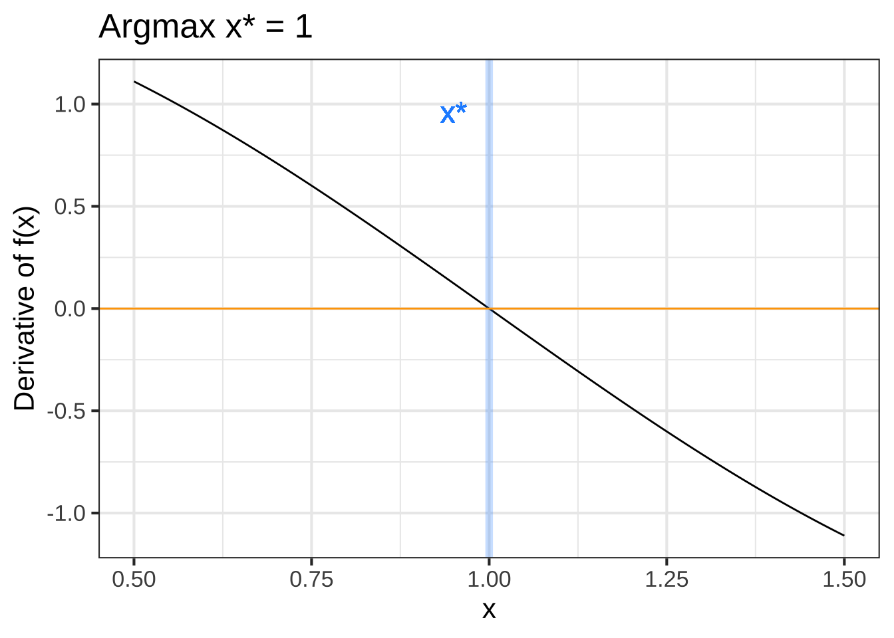
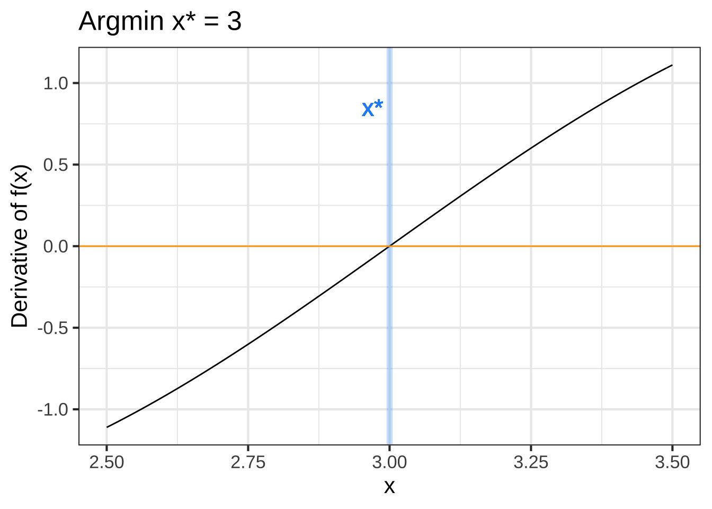
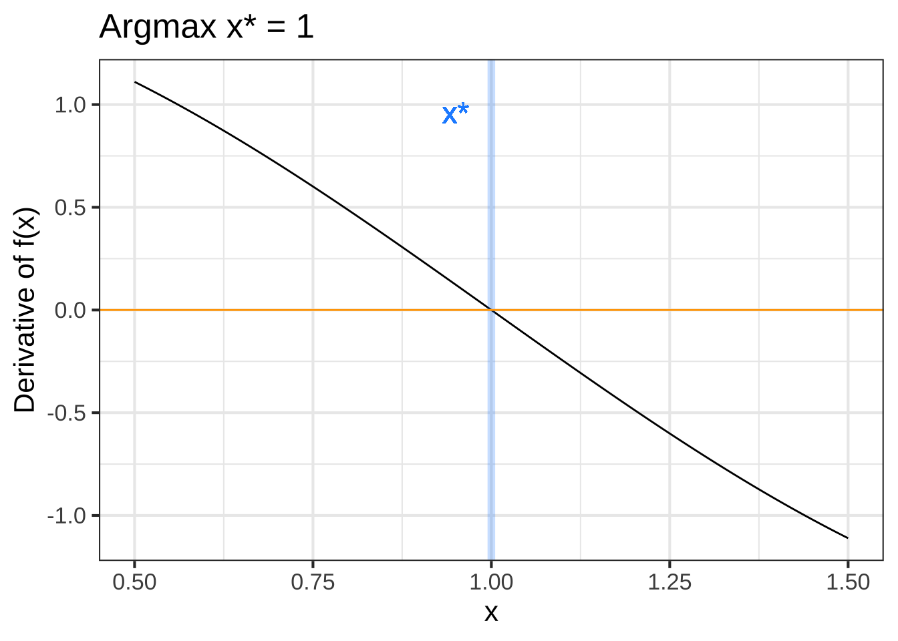
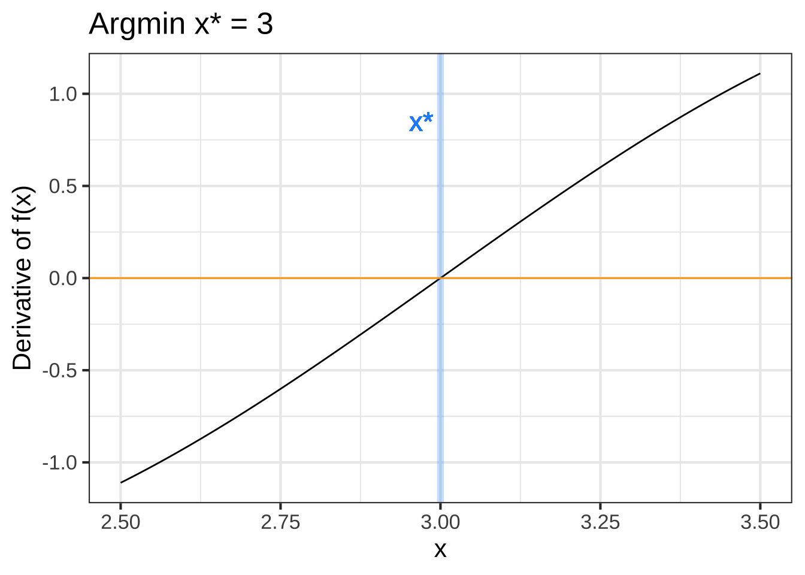
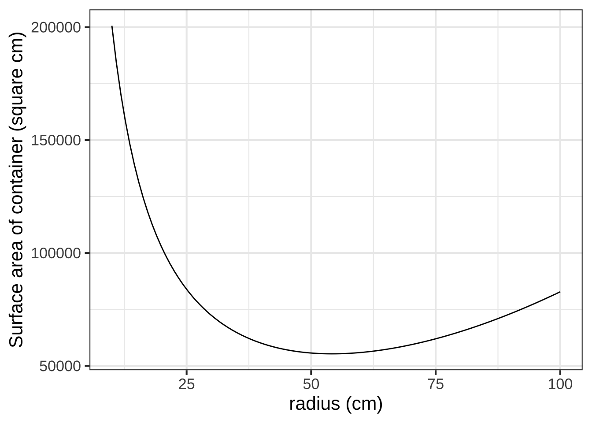
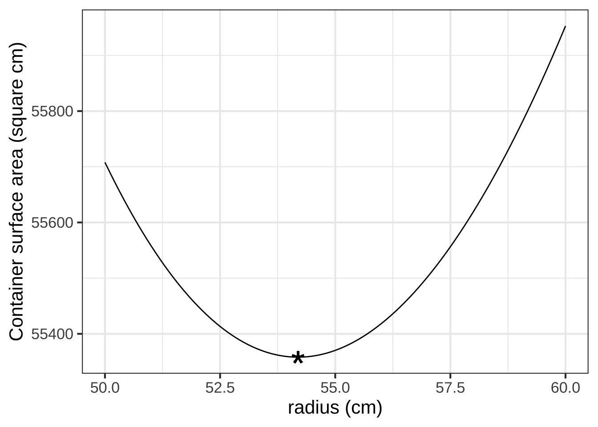
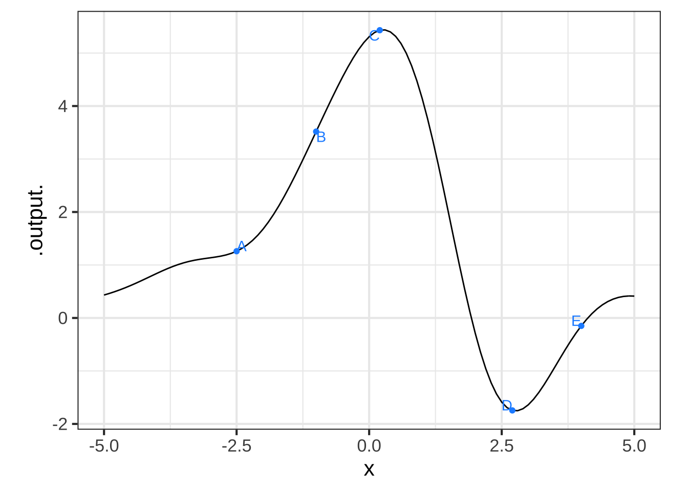
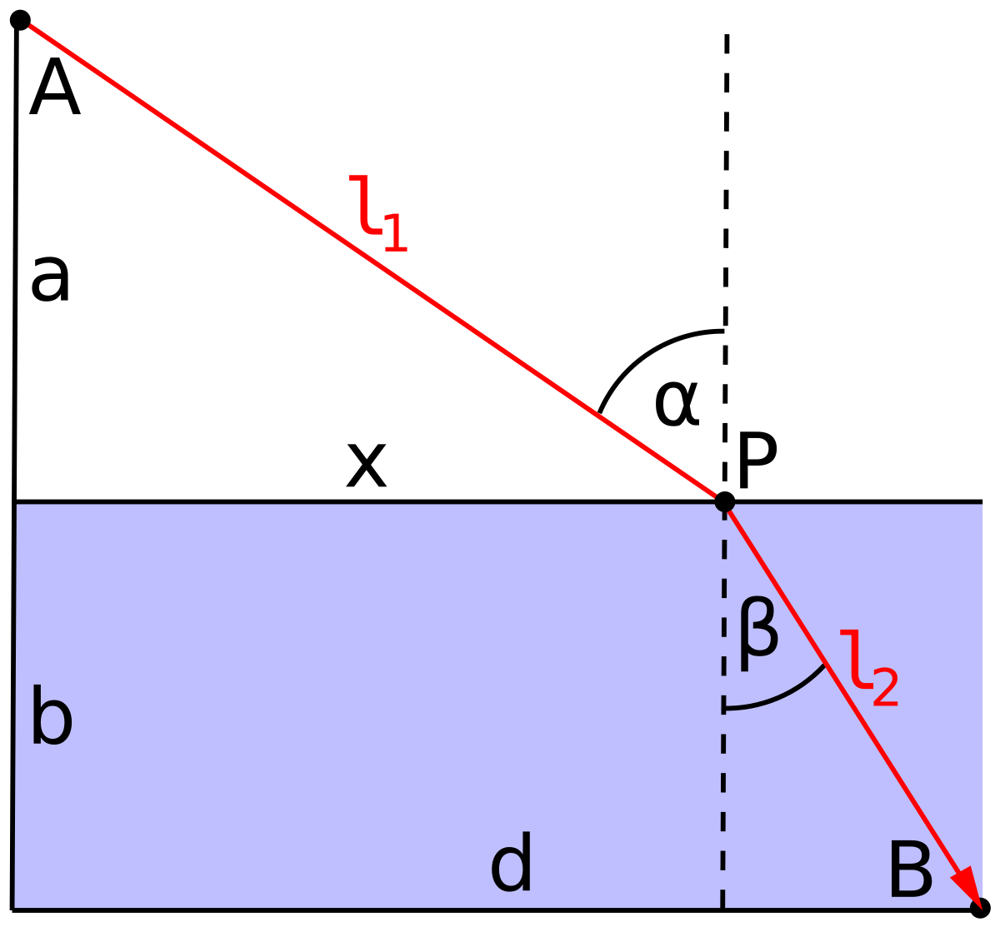
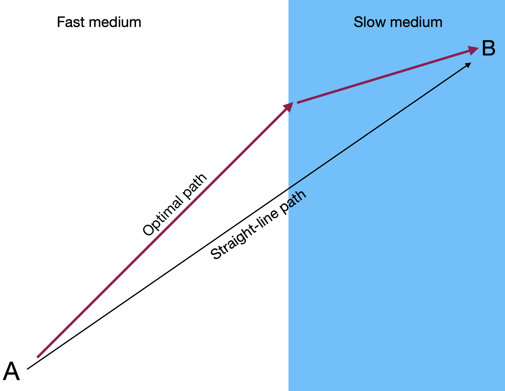
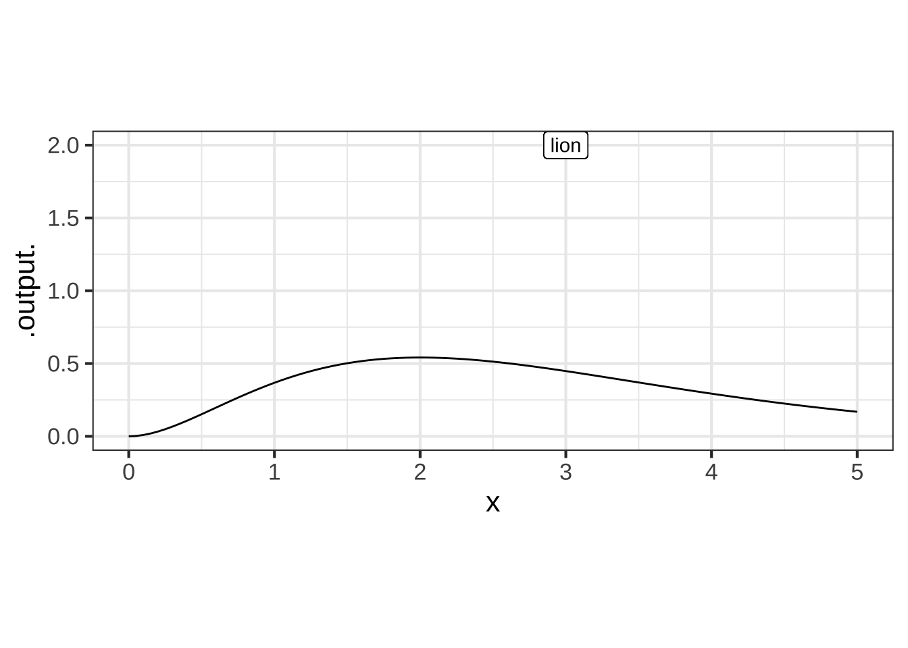

Chapter 23 Optimization
To “optimize” means to make something as good as possible with the available resources. Optimization problems are common in science, logistics, industry, and any other area where one seeks the best solution to a problem. Some everyday examples:  2440
2440
- When to harvest trees being grown for lumber. Harvest too soon and you might be losing out on the prime growing years. Wait too long and trees will have settled in to slow growth, if any.
- Walking up too steep a slope is tiring and slows you down; that’s why hiking trails have switchbacks. When the switchbacks are too shallow, it takes a long time to cover the distance. What’s the most efficient angle to enable hikers to get up the hill in the shortest time.
- How much salt to add to a stew. Stews can be too salty, or they can be not salty enough. Somewhere in the middle is the optimum.2445
23.1 Structure of the problem
In an optimization problem, there is one or more input quantities whose value you have to choose. The amount of salt; the years to wait from planting to harvesting a tree; the angle of the trail with respect to the slope. We’ll call this the decision quantity. 2450
Similarly, there is one or more output quantity that you value and want to make as good as possible. The taste of the stew; the amount of usable wood harvested; the time it takes to walk up the hill. The output quantities are called the objectives. 2455
In this chapter, we will deal with optimization problems that involve only a single objective. Problems with multiple objectives are among the most interesting and important in real-world decision making. Single-objective optimization techniques are a component of the more complex decision making, but they are a good place to get started.
The model that relates inputs to the objective output is called the objective function. Solving an optimization problem—once the modeling phase is complete—amounts to finding a value for the decision quantity (the input to the objective function) that produces the best output from the objective function. 2460
Sometimes the objective is something that you want to minimize, make as small as possible. In the hiking trail problem, we seek to minimize the amount of time it takes to walk up the trail. Sometimes you want to maximize the objective, as in the wood-harvest problem where the objective is to harvest the most wood per year. 2465
Mathematically, maximization and minimization are the same thing. Every minimization problem can be turned into a maximization problem by putting a negative sign in front of the objective function. To simplify the discussion, in talking about finding the solution to an optimization problem we’ll imagine that the goal is to maximize. But keep in mind that many circumstances in the real world, “best” can mean minimization. 2470
Recall from Section ?? that there are two components to the task of maximization or minimization. The argmax is the input to the objective function which produces the largest output. The maximum is the value of that output.13 Argmin and minimum are the words used in a situation where you seek the smallest value of the objective function.2475
Once you have found the argmax you can plug that value into the objective function to find the value of the output. That value is the maximum.
People often talk about “finding the maximum.” This is misleading. The setup for an optimization problem is:
- Construct (that is, model) the objective function.
- Now that you know the objective function, find the input to that function—that is, the argmax—that produces the maximum output.
To illustrate the setup of an optimization problem, imagine yourself in the situation of a contest to see who can shoot a tennis ball the farthest into a field with a slingshot. During the contest, you will adjust the vertical angle of launch, place the ball into the slingshot’s cradle, pull back as far as possible, and let go. To win the contest, you need to optimize how you launch the ball. 2480
The objective is to maximize the distance traveled by the ball. The objective function models the distance travelled as a function of the quantities you can control, for instance the vertical angle of launch or the amount by which you pull back the slingshot. For simplicity, we’ll imagine that the slingshot is pulled back by a standard amount, producing a velocity of the ball at release of \(v_0\). Since \(v_0\) is fixed, you’ll win or lose based on the angle of launch you choose. 2485
Before you head out into the field to experiment, let’s do a bit of preparation for constructing the objective function. Using some principles of physics and mathematics (which you may not yet understand), we’ll model how far the ball will travel (horizontally) as a function of the angle of launch \(\theta\) and the initial velocity \(v_0\). 2490
The mathematics of such problems involves an area called differential equations, an important part of calculus which we’ll come to later in the course. Since you don’t have the tools yet, we’ll just state a simple model of how long the ball stays in the air. \[\text{duration}(v_0, \theta) = 2 v_0 \sin(\theta)/g\] \(g\) is the acceleration due to gravity, which is about \(9.8 \text{m}\text{s}^{-2}\), assuming that the contest is being held on Earth.
The horizontal distance travelled by the tennis ball will be \[\text{hdist}(v_0, \theta) = \cos(\theta) v_0\, \text{duration}(v_0, \theta) = 2 v_0^2 \cos(\theta)\sin(\theta) / g\] Our objective function is hdist(), and we seek to find the argmax. The input \(v_0\) is (we have assumed) fixed, so the only decision quantity is the angle \(\theta\).
The best choice of \(\theta\) will make the quantity \(\cos(\theta)\sin(\theta)\) as large as possible. So in finding the argmax, we don’t need to be concerned with \(v_0\) or \(g\).
Finding the argmax can be accomplished simply by plotting the function \(\cos(\theta)\sin(\theta)\). We’ll implement the function so that the input is in units of degrees.

Figure 23.1: In the simple model of a tennis ball launched at an angle \(\theta\) from the horizontal, the distance travelled is \(2 v_0^2 / g\) times \(\cos(\theta)\sin(\theta)\).
You can see that the maximum value is about 0.5 and that this occurs at an argmax \(\theta\) that’s a little bit less than 50\(^\circ\).
Zooming in on the \(\theta\) axis let’s you find the argmax with more precision:

Figure 23.2: Zooming in on the argmax of the objective function. It’s important to look at the scale of the vertical axis. Any value of \(\theta\) between about 40 and 50 gives a very close approximation to the maximum.
From the graph, especially the zoomed-in version, you can read off the argmax as \(\theta = 45^\circ\).
Finding the argmax solves the problem. You may also want to present your solution by saying what the value of the output of hdist() is when the argmax is given as input. You can read off the graph that the maximum of \(\cos(\theta)\sin(\theta)\) is 0.5 at \(\theta = 45^\circ\), so overall the distance will be \(v_0^2 / g\) 2495
23.2 Interpreting the argmax
The graphical solution given to the slingshot problem is entirely satisfactory. Whether that solution will win the contest depends of course on whether the model we built for the objective function is correct. There are potentially important things we have left out, such as air resistence. 2500
Solving the optimization problem has prepared us to go out in the field and test the result. Perhaps we’ll find that the real-world optimum angle is somewhat steeper or shallower than \(\theta = 45^\circ\). 2505
Besides the argmax, another important quantity to read from the graph in Figure 23.1 is the precision of the argmax. In strict mathematical terms, the argmax for the tennis-ball problem is exactly 45 degrees at which point \(\cos(\theta)\sin(\theta) = 0.5\). Suppose, however, that the ball were launched at only 40 degrees. Five degrees difference is apparent to the eye, but the result will be essentially the same as for 45 degrees: \(\cos(\theta)\sin(\theta) = 0.492\). The same is true for a launch angle of 50 degrees. For both “sub-optimal” launch angles, the output is within 2 percent of the 45-degree result. It’s easy to imagine that a factor outside the scope of the simple model—the wind, for instance—could change the result by as much or more than 2 percent, so a practical report of the argmax should reasonable be “40 to 50 degrees” rather than “exactly 45 degrees.” 2510
Contests are won or lost by margins of less than 1%, so you should not casually deviate from the argmax. On the other hand, \(45^\circ\) is the argmax of the model. Reality may deviate from the model. For instance, suppose that air resistance or wind might have an effect of about 1% on the distance. Since the real-world function might deviate by as much as 1% of the model value, we shouldn’t expect the real-world argmax to be any closer to 45\(^\circ\) than \(\pm 5^\circ\), since anywhere in that input domain generates an output that is within 1% of the maximum output for the model. 2515
23.3 Derivatives and optimization
We’re now going to reframe the search for the argmax and it’s interpretation in terms of derivatives of the objective function with respect to the decision quantity (\(\theta\) in the slingshot problem). For a function of one variable, this will not be an improvement from the look-at-the-graph technique to find the argmax. A genuine reason to use derivatives is to set us up in the future to solve problems with more than one variable, where it is hard to draw or interpret a graph. Also, describing functions in the language of derivatives can help us think more clearly about aspects of the problem, such as the precision of the argmax. 2520
With a graph such as Figure 23.1, it’s easy to find the argmax; common sense carries the day. So it won’t be obvious at first why we are going to take the following approach:
Let’s denote an argmax of the objective function \(f(x)\) by \(x^\star\).
Let’s look at the derivative \(\partial_x f(x)\) in the neighborhood of \(x^\star\). Referring to Figure 23.1, where \(x^\star = 45^\circ\), you may be able to see that \(\partial_x f(x^\star)\) is zero; the line tangent to the function’s graph at \(x^\star\) is horizontal. 2525
Seen another way, the slope of \(f(x)\) to the left of \(x^\star\) is positive. Move a tiny bit to the right (that is, increase \(x\) by a very small amount) leads to an increase in the output \(f(x)\). Just to the right of \(x^\star\), the slope of \(f(x)\) is negative; as you reach the top of a hill and continue on, you will be going downhill. So the derivative function is positive on one side of \(x^\star\) and negative on the other, suggesting that it crosses zero at the argmax. 2530
Common sense is correct: Walk uphill to get to the peak, walk downhill to move away from the peak. When you come to the top of a smooth hill, the terrain is level. (Since our modeling functions are smooth, so must be the hills that we visualize the functions with.)
Inputs \(x^\star\) such that \(\partial_x f(x^\star) = 0\) are called critical points. Why not call them simply argmaxes? Because a the slope will also be zero at an argmin. And it’s even possible to have the slope be zero at a point that’s neither an argmin or an argmax. 2535
At this point, we know that values \(x^\star\) that give \(\partial_x f(x^\star) = 0\) are “critical points,” but we haven’t said how to figure out whether a given critical point is an argmax, an argmin, or neither. This is where the behavior of \(\partial_x f(x)\) near \(x=x^\star\) is important. If \(x^\star\) is an argmax, then \(\partial_x f(x)\) will be positive to the left of \(x^\star\) and negative to the right of \(x^\star\); walk up the hill to get to \(x^\star\), at the top the hill is flat, and just past the top the hill has a negative slope. 2540
For an argmin, changing \(x\) from less than \(x^\star\) to greater than \(x^\star\); you will be walking down into the valley, then level at the very bottom \(x=x^\star\), then back up the other side of the valley after you pass \(x=x^\star\). Figure 23.3 shows the situation. 2545

 

Figure 23.3: Top row: An objective function near an argmax (left) and an argmin (right). Bottom row: The derivative of the objective function. A horizontal line (orange) has been added to mark zero on the vertical axis.
The bottom row of graphs in Figure 23.3 shows the derivative of the objective function \(f(x)\), that is, \(\partial_x f(x)\). You can see that for the argmax of \(f(x)\), the derivative \(\partial_x f(x)\) is positive to the left and negative to the right. Similarly, near the argmin of \(f(x)\), the derivative \(\partial_x f(x)\) is negative to the left and positive to the right. 2550
Stated another way, the derivative \(\partial_x f(x)\) has a negative slope just to the left of an argmin and a positive slope to the left of an argmax. 2555
The second derivative of the objective function \(f(x)\) at a critical point \(x^\star\) is what tells us whether the critical point is an argmax, an argmin, or neither.
| Critical point \(x^\star\) | \(\partial_x f(x^\star)\) | \(\partial_{xx} f(x^\star)\) |
|---|---|---|
| argmax | 0 | negative |
| argmin | 0 | positive |
| neither | 0 | 0 |
Throughout Block 2, we have translated features of functions that are evident on a graph into the language of derivatives:
- The slope of a function \(f(x)\) at any input \(x\) is the value of the derivative function \(\partial_x f(x)\) at that same \(x\).
- The concavity of a function \(f(x)\) at any input is the slope of the derivative function, that is, \(\partial_{xx} f(x)\).
- Putting (i) and (ii) together, we get that the concavity of a function \(f(x)\) at any input \(x\) is the value of the second derivative function, that is, \(\partial_{xx} f(x)\).
- At an argmax \(x^\star\) of \(f(x)\), the value of the derivative function \(\partial_x f(x^\star)\) is zero and the value of the second derivative function \(\partial_{xx} f(x^\star)\) is negative. The situation at an argmin is along the same lines, the derivative of the objective function is zero and the second derivative is positive. 2575
What’s the critical point?
You’re familiar with the quadratic polynomial: \[g(x) = a_0 + a_1 x + a_2 x^2\]
The graph of a quadratic polynomial is a parabola, which might be concave up or concave down. As you know, a parabola has only one critical point, which might be an argmin or an argmax. 2580
Let’s find the critical point. We know that the critical point is \(x^\star\) such that \(\partial_x g(x^\star) = 0\). Since we know how to differentiate a power law, we can see that
\[\partial_x g(x) = a_1 + 2 a_2 x\] and, more specifically, at the critical point \(x^\star\) the derivative will be
\[a_1 + 2 a_2 x^\star = 0\]
The above is an equation, not a definition. It says that whatever \(x^\star\) happens to be, the quantity \(a_1 + 2 a_2 x^\star\) must be zero. Using plain old algebra, we can find the location of the critical point \[x^\star = -\frac{a_1}{2 a_2}\] 2585
In economics, a monopoly or similar arrangement can set the price for a good or commodity. Monopolists can set the price at a level that generates the most income for themselves.
Figure 23.4: Demand as a function of price, as first published by Antoine-Augustin Cournot in 1836. Source)
In 1836, early economist Antoine-Augustin Cournot published a theory of revenue versus demand based on his conception that demand will be a monotonically decreasing function of price. (That is, higher price means lower demand.) We’ll write as \(\text{Demand}(p)\) demand as a function of price.
The revenue generated at price \(p\) is \(R(p) \equiv p \text{Demand}(p)\): price times demand.
To find the revenue-maximizing demand, differentiate \(R(p)\) with respect to \(p\) and find the argmax \(p^\star\) at with \(\partial_p R(p^\star) = 0).\) This can be done with the product rule.
\[\partial_p R(p) = p \ \partial_p \text{Demand}(p) + \text{Demand}(p)\] At the argmax \(p^\star\) we have: \[p^\star \partial_p \text{Demand}(p^\star) + \text{Demand}(p^\star) = 0 \ \ \stackrel{\text{solving for}\ p^\star}{\Longrightarrow} \ \ p^\star = - \frac{\text{Demand}(p^\star)}{\partial_p \text{Demand}(p^\star)}\]
If the monopolist knows the demand function \(D(p)\), finding the revenue maximizing price is a simple matter. But in general, the monopolist does not know the demand function in advance. Instead, an informed guess is made to set the initial price \(p_0\). Measuring sales \(D(p_0)\) gives one point on the demand curve. Then, try another price \(p_1\). This gives another point on the demand curve as well as an estimate \[\partial_p D(p_0) = \frac{D(p_1) - D(p_0)}{p_1 - p_0}\] Now the monopolist is set to model the demand curve as a straight-line function and easily to find \(p^\star\) for the model. For instance, if the demand function is modeled as \(D_1 (p) = a + b p\), the optimal price will be \(p^\star_1 = - \frac{a + b p^\star}{b}\) which can be solved as \(p^\star_1 = - a/2b\).
\(p^\star_1\) is just an estimate of the optimum price. Still, the monopolist can try out that price, giving a third data point for the demand function from which a better model of the demand function can be constructed. With the better estimate, find a new a argmax \(p^\star_2\). This sort of iterative process for finding an argmax of a real-world function is very common in practice.
23.4 Be practical!
Decision making is about choosing among alternatives. In some engineering or policy contexts, this can mean finding a value for an input variable that will produce the “best” outcome. For those who have studied calculus, it’s natural to believe that calculus-based techniques for optimization are the route to making the decision.
We emphasize that the optimization techniques covered in this chapter are only part of a broader set of techniques for real-world decision-making problems. In particular, most policy contexts involve multiple objectives. For example, in designing a car one goal is to make it cheap to manufacture, another to make it attractive, and still another to make it safe. These different objectives are often at odds with one another. In Block 4 of this text, we’ll discuss some calculus techniques that help policy-makers in multi-objective settings.
For now, sticking with the idealized (and often unrealistic) setting of maximizing a single objective, with one or more inputs. Recall the setting for calculus-type maximization. You have a function with one or more inputs, say, \(f(x)\) or \(g(x,y)\) or, often, \(h(x, y, z, \ldots)\) where \(\ldots\) might be standing for tens or hundreds or thousands of variables or more.
If you can graph the function (feasible for one- or two-input functions), you can often easily scan the graph by eye to find the peak. The calculus-based techniques were developed for situations where such graphing is not possible and, instead, you have a formula for the function. (Such occasions are of great theoretical interest but not all that common in practice.) The basis of the calculus techniques is the observation that, at the argmax of a smooth function, the derivative of the function is 0.
As an example, consider a style problem that often appears in calculus textbooks. You have been tasked to design a container for a large volume V of liquid. It is desired to make the weight of the container as little as possible. (This is a minimization problem, then.) In classical textbook fashion, you are told that the container is to be a cylinder made out of a particular metal of a particular thickness.
This is a lovely geometry/calculus problem. Whether it is relevant to any genuine, real-world problem is another question.

Using the notation in the diagram, the volume and surface area of the cylinder is \[V(r, h) \equiv \pi r^2 h \ \ \ \text{and}\ \ \ A(r, h) \equiv 2 \pi r^2 + 2 \pi r h\]
Minimizing the weight of the cylinder is our objective (according to the problem statement) and the weight is proportional to the surface area. Since the volume \(V\) is given (according to the problem statement), we want to re-write the area function to use volume:
\[h(r, V) \equiv V / \pi r^2 \ \ \ \implies\ \ \ A(r, V) = 2 \pi r^2 + 2 \pi r V/\pi r^2 = 2 \pi r^2 + 2 V / r\] Suppose \(V\) were specified as 1000 liters. A good first step is to choose appropriate units for \(r\) to make sure the formula for \(A(r, V)\) is dimensionally consistent. Suppose we choose \(r\) in cm. Then we want \(V\) in cubic centimeters (cc). 1000 liters is 1,000,000 cc. Now we can plot a slice of the area function:
A <- makeFun(2*pi*r^2 + 2*V/r ~ r, V=1000000)
slice_plot(A(r) ~ r, domain(r=c(10, 100))) %>%
gf_labs(x = "radius (cm)", y = "Surface area of container (square cm)")
As always, the function’s derivative is zero at the optimal \(r\). In the graph, the argmin is near \(r=50\) cm at which point the minimum is about 50,000 cm\(^2\). Since \(h(r,V) = V/\pi r^2\), the required height of cylinder will be near \(10^6 / \pi 50^2 = 127\)cm.
In calculus courses, the goal is often to find a formula for the optimal radius as a function of \(V\). So we differentiate the objective function—that is, the area function for any \(V\) and \(r\) with respect to \(r\), \[\partial_r A(r, V) = 4 \pi r - 2 V / r^2\] Setting this to zero (which will be true at the optimal \(r^\star\)) we can solve for \(r^\star\) in terms of \(V\): \[4 \pi r^\star - 2 \frac{V}{\left[r^\star\right]^2} = 0 \ \ \ \Longrightarrow\ \ \ 4\pi r^\star = 2\frac{V}{\left[r^\star\right]^2} \Longrightarrow\ \ \ \left[r^\star\right]^3 = \frac{1}{2\pi} V \ \ \ \Longrightarrow\ \ \ r^\star = \sqrt[3]{V/2\pi}\]
For \(V = 1,000,000\) cm\(^3\), this gives \(r^\star = 54.1926\) cm which in turn implies that the corresponding height \(h^\star = V/\pi (r^\star)^2 = 108.3852\) cm.
We’ve presented the optimum \(r^\star\) and \(h^\star\) to the nearest micron. (Does that make sense to you? Think about it for a moment before reading on.)
A good rule of thumb in modeling is this: “If you don’t know what a sensible precision is for reporting your result, you don’t have a complete grasp of the problem.” Here are two reasonable ways to sort out a suitable precision.
- Solve a closely related problem which for many practical purposes would have been equivalent.
- Look at how big a change in the output of the objective function is produced by a change from the argmax.
Approach (2) is always at hand, since you already know the objective function. Let’s graph the objective function near \(r = 54.1926\) …

Look carefully at the axes scales. Deviating from the mathematical optimum by about 5cm (that is, 50,000 microns) produces a change in the output of the objective function by about 400 units out of 55,000. In other words, about 0.7%.
It’s true that \(r^\star = 54.1926\) cm gives the “best” outcome. And sometimes such precision is warranted. For example, improving the speed of an elite marathon racer by even 0.1% would give her a 7 second advantage: often the difference between silver and gold!
What’s different is that you know exactly what is the ultimate objective of a marathon: finish faster. But you may not know the ultimate objective of the system your “optimal” tank will be a part of. For instance, your tank may be part of an external fuel pod on an aircraft. Certainly the designers of the aircraft want the tank to be as light as possible. But they also want to reduce drag as much as possible. A 54 cm diameter tube has about 17% more drag than a 50 cm tube. To save that much drag, it’s probably well worth increasing weight by 0.7%.
In reporting the results from an optimization problem, you ought to give the decision maker all relevant information. Here, that might be as simple as including the above graph in your report.
We mentioned another technique for getting a handle on what precision is meaningful: (1) solve a closely related problem. This often requires some insight and creativity to frame the new problem. Here, we note that large capacity tanks often are shaped like a lozenge: a cylinder with hemi-spherical ends.

Using \(h\) for the length of the cylindrical portion of the tank, and \(r\) for the radius, the volume and surface area are: \[V(r, h) = \pi r^2 h + \frac{4}{3} \pi r^3 \ \ \ \text{and}\ \ \ A(r,h) = 2 \pi r h + 4 \pi r^2\] Again, \(V\) was specified as 1000 liters. As detailed in Exercise 23.18, the surface area of this 1000-liter tank is about 48,400 cm\(^2\). This is more than 10% less than for the cylindrical tank.
23.5 Exercises
Exercise 23.02: 0zyL02
The simple model of the distance travelled by a tennis ball after launch from a slingshot is \[\text{hdist}(v_0, \theta) = 2 v_0^2 \cos(\theta)\sin(\theta) / g\] where \(\theta\) is the launch angle, measured from the horizontal, \(v_0\) is the initial velocity, and \(g\) is the acceleration due to gravity.
Question A What is the dimension of \(v_0\)?
L T︎✘ L / T\(\heartsuit\ \)As in miles/hour or meters/second. L / T\(^2\)︎✘ L\(^2\) / T\(^2\)︎✘
Question B What is the dimension of \(g\)?
M L︎✘ M L / T︎✘ L / T\(^2\)\(\heartsuit\ \) M L / T\(^2\)︎✘ This is force, not acceleration.
Question C What is the dimension of \(\theta\)?
- L︎✘
- L^2︎✘
- T/L︎✘
- It’s dimensionlessGood. An angle is measured by distance along the circumference of a circle divided by the radius of the circle, so L/L. The L dimensions cancel out.
Question D What is the dimension of \(\sin(\theta\))?
- L︎✘
- L^2︎✘
- T/L︎✘
- It’s dimensionlessExcellent! The output of a sinusoid is always dimensionless. You would have to multiply by a dimensionful amplitude (\(A \sin(\theta)\)) to attach a dimension to the output.
Question E What is the dimension of \(2 v_0^2 \cos(\theta)\sin(\theta) / g\)?
L\(\heartsuit\ \) L^2︎✘ L/T︎✘ L/T\(^2\)︎✘
Question F Suppose the initial velocity of the ball is \(v_0 = 10\) meters/second. Since we’re on the surface of Earth, \(g=9.8\) meters/second-squared. At the optimal launch angle \(\theta\), how far does the model predict the ball will travel?
10 meters\(\heartsuit\ \) 25 meters︎✘ 50 meters︎✘ 75 meters︎✘
Exercise 23.04: FbJynV
Question A Consider the function \(f(x) \equiv x^3\). Confirm that the value of the derivative \(\partial_x f(x = 0)\) and so \(x^\star = 0\) is a critical point. Which sort of critical point is \(x^\star=0\)? (Hint: Draw the graph of \(f(x)\) near \(x=0\) to see what’s going on.)
- An argmax︎✘ But \(f(0) < f(x > 0)\), so \(x^\star=0\) can’t be an argmax.
- An argmin︎✘ But \(f(x < 0) < f(0)\), so \(x^\star=0\) can’t be an argmin.
- NeitherRight!
Question B Still working with the function \(f(x) \equiv x^3\), find the value of the second-derivative \(\partial_{xx} f(x^\star)\) evaluated at the critical point \(x = x^\star = 0\). Which of these is \(\partial_{xx} f( x=0)\)?
- Negative︎✘ But you established in the previous exercise that the critical point \(x^\star=0\) is neither an argmin nor wan argmax.
- Positive︎✘ But you established in the previous exercise that the critical point \(x^\star=0\) is neither an argmin nor wan argmax.
- ZeroExcellent!
Exercise 23.06: ykelx
The graph shows three different functions labeled (A), (B), and (C).


Question A Function (A) is
concave down\(\heartsuit\ \) non-concave︎✘ concave up︎✘
Question B Function (B) is
concave down︎✘ non-concave︎✘ concave up\(\heartsuit\ \)
Question C Function (C) is
concave down︎✘ non-concave\(\heartsuit\ \) concave up︎✘
Question D The negative of function (A) is
concave down︎✘ non-concave︎✘ concave up\(\heartsuit\ \)
The graph shows a function \(\text{wave}(t) \equiv \sin(2 \pi t/4)\) and labels four input values \(t\).

Question E For what values of the input \(t\) is the function concave up?
\(t = A\) and \(t=D\)︎✘ \(t = A\) and \(t=C\)︎✘ \(t = C\) and \(t = D\)\(\heartsuit\ \) none of the above︎✘
Question F For what values of the input \(t\) is the function non-concave?
\(t = A\)\(\heartsuit\ \) \(t=B\)︎✘ \(t=C\)︎✘ none of the above︎✘
Question G Where is the function steepest?
\(t = A\)\(\heartsuit\ \) \(t=B\)︎✘ \(t=C\)︎✘ \(t=D\)︎✘
Exercise 23.08: lexkd
Here is a smooth function marked at a few points. Your task is, at each point, to estimate the value of the derivative, the sign of the second derivative, and the radius of the circle that would nicely match the function in a small region around each point. (Remember, we’re asking for the radius of the circle, which is half the diameter.)
To simplify things, here is a table giving seven different combinations of the quantities you are to estimate. Some of them correctly match one of the labeled points, some do not. All you need to do is choose which is the correct set of quantities for each labeled point.

| row | value of 1st deriv | sign of 2nd deriv | radius |
|---|---|---|---|
| i | -0.3 | pos | 0.25 |
| ii | 2.1 | near 0 | 2000 |
| iii | -1.4 | neg | 12 |
| iv | 0.3 | neg | 0.3 |
| v | 2.1 | pos | 0.1 |
| vi | 1.3 | neg | 3 |
| vii | 0.5 | pos | 1 |
Question A Which row from the table best matches the function at point A?
i︎✘ ii︎✘ iii︎✘ iv︎✘ v︎✘ vi︎✘ vii\(\heartsuit\ \)
Question B Which row from the table best matches the function at point B?
i︎✘ ii\(\heartsuit\ \) iii︎✘ iv︎✘ v︎✘ vi︎✘ vii︎✘
Question C Which row from the table best matches the function at point C?
i︎✘ ii︎✘ iii︎✘ iv\(\heartsuit\ \) v︎✘ vi︎✘ vii︎✘
Question D Which row from the table best matches the function at point D?
i\(\heartsuit\ \) ii︎✘ iii︎✘ iv︎✘ v︎✘ vi︎✘ vii︎✘
Question E Which row from the table best matches the function at point E?
i︎✘ ii︎✘ iii︎✘ iv︎✘ v︎✘ vi\(\heartsuit\ \) vii︎✘
Exercise 23.10: dwes
You and your pet dog Swimmer often go to the beach and walk along the water’s edge. You throw a ball down the beach, but at an angle so it lands in the water. Swimmer goes to work. She runs down the beach (fast) and then plunges into the water, heading toward the ball. She can run fast on the beach: 400 m/minute. But she swims rather slower: 50 m/min.
Suppose you threw the ball to a point about 50 meters down the beach and 10 meters out in the water. The overall distance to the ball is therefore \(\sqrt{50^2 + 10^2} \approx 51\) meters. If Swimmer entered the water immediately, she would take about a minute to reach the ball (51 m / 50 m/min). Swimmer can get to the ball faster by running down the beach a bit and then turning into the water. If Swimmer ran all 50 meters down the beach and then turned to swim the 10 meters, it would take her (50/400 + 10/50) minutes, about one-third of a minute.

Figure 23.5: Swimmer’s optimal path to the ball consists of running \(x\) meters along the shore, then swimming diagonally to the ball.
Can Swimmer do better? You can set up the calculation like this. Imagine \(x\) to be the distance down the beach that Swimmer runs. The time to run this distance will be \(x/400\). The distance remaining to the ball can be found by the Pythagorean theorem. One leg of the triangle has length \((50-x)\), the other has length 10 m. So, the length of the third side is \(\sqrt{\strut (50-x)^2 + 10^2}\). For instance, if \(x\) were 45, the distance to swim in the water would be \(\sqrt{(50-45)^2 + 10^2} = 11.2\) m. Divide this distance by 50 m/min to get the time spent in the water.
distance_in_water <- makeFun( __your_pythagorean_formula ~ x)
time_to_ball <- makeFun(x/400 + distance_in_water(x)/50 ~ x)Time_to_ball() takes one argument, the distance \(x\) Swimmer runs down the beach before turning into the water. Use a SANDBOX to find the distance that calculus-savvy Swimmer runs down the beach before turning into the water, if Swimmer’s goal is to get to the ball as fast as possible.
Question A What’s the optimal running distance for Swimmer?
46.75︎✘ 47.5︎✘ 48.75\(\heartsuit\ \) 49.75︎✘
Here’s a news story about a mathematician’s dog on the shore of Lake Michigan. It’s not plausible that Swimmer has been trained in calculus. Perhaps the way Swimmer solves the running distance problem is simply to graphtime_to_ball(x) ~ x over a suitable domain and find the argmax by eye!
Exercise 23.12: whfrt
If you’re skeptical that a dog might do a calculus problem before running to fetch a ball, consider the path taken by a photon. “Fermat’s Principle” is that light takes the path of least time. To illustrate, consider the problem of a photon travelling from a point A to a point B, as in the diagram. The shortest path between the two points is a straight line. Along this straight-line path, the time taken by the photon will be the distance divided by the speed of light.
The diagram shows another path consisting of two segments, one of length \(l_1\) and the other \(l_2\). Obviously, the two-segment path is longer than the straight-line path. But according to Fermat’s principle, light “prefers” the longer path if the time taken to traverse it is shorter. This phenomenon is called refraction.

The reason the indirect path might be shorter is that the speed of light differs in different physical media. Light traveling in a vacuum famously has a speed of about 300,000 km per second. In air, the speed is smaller by a factor of 1/1.003. In water, the speed is smaller still: the factor is 1/1.3.
Imagine that the blue zone of the diagram is water and the clear zone air. The time for the photon to travel from point A to B is proportional to \(1.003\ l_1 + 1.3\ l_2\).

To see the path actually taken by light, let’s imagine that point A is \((x=0, y=10)\) and point B is \((x=20, y=-10)\), and that the boundary between water and air is at \(y=0\). We’ll place the point P at \((x, 0)\). The total time taken for light to traverse this path is 1.003 dist(A to P) + 1.3 dist(P to B).
Question A Which of these formulas gives the total time it takes for light to traverse the path from A to P at relative speed 1/1.003 and then the path from P to B at relative speed 1/1.3? A is located at \((0, 10)\), B is located at \((20,-10)\), and P is located at \((x, 0)\)
- \(1.003 \sqrt{(x-0)^2 +(0-10)^2}+ 1.3\sqrt{(20-x)^2 + (-10 - 0)^2}\)Nice!
- \(\sqrt{(x-0)^2 +(0-10)^2}/1.003+ \sqrt{(20-x)^2 + (-10 - 0)^2}/1.3\)︎✘ It’s true that you divide distance by speed to get time, but here the relative speeds are \(1/1.003\) and \(1/1.3\).
- \(1.003 \sqrt{(x-10)^2 +(0-0)^2}+ 1.3\sqrt{(-10 -x)^2 + (50 - 0)^2}\)︎✘ This mixes up the x and y coordinates. The distance from A to P is \(\sqrt{(x_P - x_A)^2 + (y_P - y_A)^2}\). In this problem, point P is at \((50-x, 0)\).
Implement the calculation of total_time() in R, then use a graph to find the argmin.
total_time <- makeFun( your_formula ~ x)
slice_plot(total_time(x) ~ x, domain(x=c(0, 20)))
# For the next problem
dx_time <- D(total_time(x) ~ x)
dxx_time <- D(total_time(x) ~ x & x)Question B What value of \(x\) (that is, the argmin) minimizes the travel time of light between points A and B? (Choose the best answer)
10.52︎✘ 11.02︎✘ 12.22︎✘ 12.50\(\heartsuit\ \) 13.21︎✘ 14.94︎✘
Question C Suppose that instead of being water, the blue area was glass. The speed of light in glass is roughly 1/1.5 times as big as in vacuum. What value of \(x\) minimizes the travel time of light between points A and B? (Choose the best answer)
13.60\(\heartsuit\ \) 14.58︎✘ 14.85︎✘ 15.54︎✘
Exercise 23.14: jgtrds
Turn this into a problem about algebra.
Later in accumulation, figure out the mile-markers on the road.
There is a tradition in mathematics education of using geometrical, distance-related problems to illustrate optimization. As it happens, some such problems can provide some valuable insight into physical situations.
Suppose you have a function \(f(x)\) whose graph represents the path of a road through the jungle. There is a lion at coordinates \((3, 2)\) in the jungle. At what point as you travel along the road will you be closest to the lion.
The trick here is to see that your position on the road at any value of \(x\) is \((x, f(x))\). The distance to the lion as a function of \(x\) is \[ \text{lion.dist}(x) \equiv \sqrt{(x - 3)^2 + (f(x)-2)^2} .\]
The road and the lion are graphed in the sandbox for the road \(f(x) \equiv x^2 e^{-x}\). You can see that the road comes closest to the lion at roughly \(x=3\). When you implement the lion.dist\((x)\) function, you’ll be able to find the argmin, that is, the value of the input \(x\) for which the output lion_dist\((x)\) is minimal. The value of the function lion_dist\((x)\) at the argmin is the min of the function.
slice_plot(x^2 * exp(-x) ~ x, domain(x=c(0,5))) %>%
gf_label(2 ~ 3, label="lion") %>%
gf_refine(coord_fixed())
To find the argmin of the distance to the lion more precisely, implement the \(\text{lion.dist}(x)\) function in the sandbox. Plot this out and look for the minimum. Alternatively, find \(\partial_x \text{lion.dist}(x)\) and find the \(x\) of the zero crossing.
Question A Using the sandbox above, find the argmin for which the graph of the function \(g(x) \equiv x^2 \exp(-x)\) comes closest to the point \((3, 2)\)? (Choose the best answer.)
2.03︎✘ 2.07︎✘ 2.21︎✘ 2.27︎✘ 2.28︎✘ 2.33︎✘ 2.37︎✘ 2.39︎✘ 2.43︎✘ 2.48︎✘ 2.58︎✘ 2.71︎✘ 2.80\(\heartsuit\ \) 2.94︎✘
Exercise 23.18: ph92lT
Return to the problem of finding the optimal radius of a cylindrical tank with spherical ends. The point is to choose the sphere radius \(r\) and the cylinder length \(h\) that minimize the surface area of the tank while enclosing a specified volume. In terms of \(h\) and \(r\), the volume and surface area are: \[V(r, h) = \pi r^2 h + \frac{4}{3} \pi r^3 \ \ \ \text{and}\ \ \ A(r,h) = 2 \pi r h + 4 \pi r^2\]
Question A Which of these is correct? (Hint: Only one of the answers is dimensionally consistent.)
- \(h(r, V) = (V-4\pi r^3/3)/ \pi r^2\)Good.
- \(h(r, V) = (V-4\pi r^2/2)/ \pi r^2\)︎✘
- \(h(r, V) = (V-4\pi r^3/3)/ \pi r^3\)︎✘
- \(h(r, V) = \sqrt{(V-4\pi r^3/2)/\pi r^3}\)︎✘
Question B Which of these is the correct expression for \(A(r, V)\)
- \(A(r, V) = 2 V/r + \frac{8 \pi}{3} r^2\)︎✘
- \(A(r, V) = 2 V/r + \frac{4 \pi}{3} r^2\)Good.
- \(A(r, V) = V/r + \frac{20 \pi}{3} r^2\)︎✘
- \(A(r, V) = V/r + 3 \pi r^2\)︎✘
Question C Find \(\partial_r A(r, V)\) and set to zero. Solve for \(r^\star\) in terms of \(V\). Which of these is correct?
- \(r^\star = \sqrt[3]{\frac{3}{4\pi} V}\)Excellent!
- \(r^\star = \sqrt[3]{\frac{4}{3\pi} V}\)︎✘
- \(r^\star = \sqrt[3]{\frac{3\pi}{4} V}\)︎✘
- \(r^\star = \sqrt[3]{\frac{3}{2\pi} V}\)︎✘
Find the optimum value of \(r\) to minimize \(A(r,V)\) when \(V = 1000\) liters.
Question D What is the optimal value of \(r\) in cm to a precision of one micron?
6.2035︎✘ Check that you were using the right units for \(V\). 46.0351︎✘ 52.0351︎✘ 62.0351\(\heartsuit\ \)
Use a sandbox to plot a graph of \(A(r, V)\) versus r, setting \(V = 1000\) liters.
Question E From the graph of \(A(r, V)\) versus \(r\) at \(V=1000\) liters, read off a range of \(r\) that produces \(A\) no worse than 1% greater than the minimum. How wide is that range, approximately?
\(\pm 0.1\)cm\(<span class='mcanswer'>︎✘ </span></span> <span class='Zchoice'>\)\(cm\)︎✘ \(\pm 5\)cm\(<span class='mcanswer'>\) \(</span></span> <span class='Zchoice'>\)\(cm\)︎✘Another word for an “input” is “argument.” Argmax is the contraction of argument producing the maximum output.↩︎